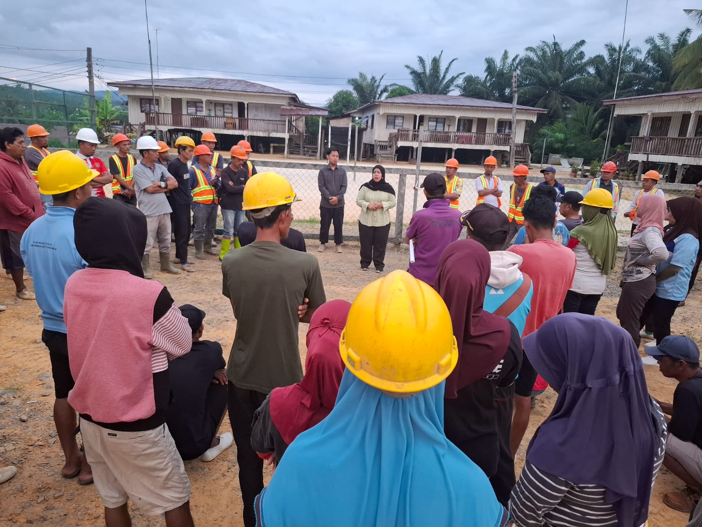

Ringkasan Rekapitulasi Evaluasi Sosialisasi
Data rekapitulasi terkini dari hasil masukan peserta kegiatan sosialisasi:
Indikator Kinerja Sosialisasi Bulan Ini – Kantor Kabupaten NunukanAkses Cepat Fitur Sistem
Informasi Kegiatan
Lihat detail jadwal, narasumber, dan dokumentasi sosialisasi terdekat.
Pengajuan Kegiatan
Ajukan permohonan sosialisasi JKN-KIS dengan validasi aksesibel.
Presensi & Evaluasi
Isi daftar hadir dan penilaian kepuasan peserta secara digital.
Katalog & Agenda
Cek daftar lengkap agenda dan status kegiatan sosialisasi.
Informasi Kegiatan Sosialisasi
Edukasi Program JKN-KIS bagi Pekerja PT. Nunukan Jaya Lestari
Kegiatan sosialisasi ini diselenggarakan oleh BPJS Kesehatan Kantor Kabupaten Nunukan guna memberikan pemahaman mendalam mengenai hak, kewajiban, tata cara pendaftaran, serta pemanfaatan prosedur pelayanan fasilitas kesehatan JKN-KIS bagi para pekerja dan instansi setempat.

Detail Acara Berlangsung:
Nama Kegiatan: Pemberian informasi langsung kepada peserta di PT. Nunukan Jaya Lestari
Tempat Kegiatan: Titik kumpul estate PT. Nunukan Jaya Lestari (PT.NJL)
Narasumber: Kepala Kabupaten BPJS Kesehatan Nunukan (Yuliarsih Sahar)
Form Pengajuan Kegiatan Sosialisasi Baru (Modul 6)
Formulir aksesibel dengan validasi client-side, constraint HTML5, dan penanganan pesan error:
Form Presensi & Evaluasi Peserta
Silakan isi data diri dan berikan penilaian Anda secara objektif setelah mengikuti kegiatan: